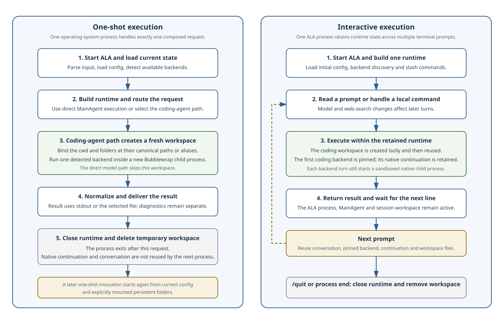

Execution backends, workspaces, and feedback
Capability-probe caches distinguish the executable and complete probe arguments. A successful outer-capability procfs probe does not certify user-namespace support on later executions.
ALA executes general requests and delegates bounded work to an authenticated coding agent. It mounts exactly the directories the caller supplies and never manages task skills.
Execution lifetimes

One-shot mode is the ordinary non-interactive CLI lifecycle. ALA loads current configuration, composes one request, optionally creates a fresh working directory, emits one normalized result, closes the runtime, and exits. The next one-shot command repeats startup and does not continue the preceding MainAgent or coding-agent conversation. Persistent caller data remains available when the caller supplies an explicit --cwd or files.
Interactive mode keeps the ALA process and runtime alive. MainAgent can retain its conversation, and once coding-agent execution begins the selected backend is pinned and its opaque native continuation is passed to later turns. The same working directory is reused, although each native backend turn still runs as a separately sandboxed child process. Local slash commands update the retained runtime and apply to later turns; closing the interactive session ends the retained state.
Generic execution capabilities
Straightforward general work normally uses direct model execution through LLMAgent. Coding-agent execution uses a detected backend, which may apply tools, research, planning, and verification inside its isolated sandbox against the caller's mounted directories.
| Capability | Execution responsibility |
|---|---|
| Direct LLM | Runs a prompt through the configured LLMAgent. |
| Fast LLM | Prefers an eligible low-latency, lower-cost model for sufficiently simple work. |
| Deep LLM | Uses an eligible stronger model when task quality requires deeper reasoning. |
| Coding agent | Delegates bounded work to a detected and authenticated Codex, OpenCode, or Pi CLI. |
| Agentic execution | Coordinates multi-step planning, retries, validation, or synthesis. |
| Web and research access | Retrieves and checks external material when the task method requires it. |
| Temporary task workspace | Isolates inputs, intermediate artifacts, checks, and final outputs for one request. |
At process startup ALA checks backend-specific binary overrides, standard user installation locations, and PATH. When it finds Codex, OpenCode, or Pi, it registers a generic AchillesAgentLib Code Skill that bridges MainAgent to the native agent CLI. The existing launcher is resolved to its interpreter or package prefix and mounted read-only for execution; ALA does not install another copy. --ca, with --agent as a compatibility alias, selects this bridge. Interactive commands can query each CLI's native model catalog and persist one model identifier per backend. ALA passes a configured identifier with the backend's native model option on every invocation, including continuation; without one, it omits the option so the CLI uses its own default. ALA does not extract credentials, so a subscription-backed agent can execute work when no direct provider API key is configured.
Web search is a coding-agent execution setting and is disabled by default. Bare --websearch enables it for one process, --websearch on|off supplies an explicit invocation override, and interactive /websearch on|off atomically saves the Boolean value and updates the existing coding-agent service without clearing its directory or continuation. ALA uses Codex's native live-search flag and temporary OpenCode web-tool permissions plus its Exa opt-in. Pi has no ALA-managed web-search capability, so ALA leaves Pi arguments and tools unchanged in both states.
Codex explicit sessions and ask mode run through app-server. ALA requests native untrusted approval policy in ask mode and never-ask policy in full-access, preserving Bubblewrap in both cases. Command/file choices and requested filesystem/network profiles retain their native scope; the UI does not invent an Always grant. Native resolution, interruption and turn completion dismiss pending choices.
OpenCode runs an ALA-owned authenticated loopback server for each execution. ALA verifies its version and API, subscribes to native events before submitting the prompt, and reads final assistant text for that submitted turn. Resume uses the saved native session directly. Permission prompts use native once/always/reject replies, including requests from owned child sessions. Server isolation keeps transient Always grants out of unrelated executions. Cancellation or event-stream loss aborts the operation and stops its server. Web policy is a process-only configuration overlay; project opencode.json is not rewritten.
Pi supports full-access only. Its explicit-session RPC lifecycle requires Pi 0.85.1 or a verified compatible release: completion waits for agent_settled, and cancellation clears queued work before aborting. An older binary fails with an upgrade or PI_BIN prerequisite instead of hanging or claiming interactive approvals. ALA installs no Pi permission extension.
Request input and result delivery
The positional text is the instruction. Repeated --text, --file, --url, and --stdin options add labeled payloads in argument order. Files and HTTP(S) responses are decoded as UTF-8, each file or response is limited to 10 MiB, the combined payload is limited to 32 MiB, and URL retrieval has a 30-second timeout.
In a non-interactive pipeline without a positional instruction, standard input becomes the instruction. With a positional instruction, standard input is read only when --stdin is present. The result is written to standard output or the file selected by --output; an existing file requires --force. Prompts and diagnostics remain on standard error.
Mounted directories and feedback
Coding-agent execution uses the caller's explicit --cwd or creates a private temporary directory when it is omitted. Every backend execution and model-catalog process runs through Bubblewrap with that directory bound read-write at its canonical path or under /workspace/<alias>. The sandbox clears its inherited environment, remounts its root read-only, exposes system files and installed backend and Node runtimes read-only, and isolates temporary paths. An explicit --home supplies the dedicated native home; otherwise only controlled backend authentication/state paths are mounted read-write. Codex receives its controlled home, Pi receives .pi/agent plus its task session directory, and OpenCode receives its configuration, cache, data, and state directories. Unrelated host paths and environment secrets remain absent. ALA fails with execution code 5 if Bubblewrap is unavailable or cannot create the namespace.
ALA mounts every supplied directory at its canonical absolute path, or under /workspace/<alias> when an alias is given. --cwd is the writable working directory; repeatable --folder <path> [write] [as <alias>] mounts additional directories read-only unless marked write. A read-only ancestor may contain the writable cwd; ancestors are mounted before descendants. The selected backend runtime is mounted read-only and preferred in the sandbox path. ALA probes procfs with the same dynamic runtime mounts used by execution and never exposes the caller's procfs. It normally constructs private procfs inside a user namespace. In a capability-bounded nested container that blocks that additional user namespace from mounting procfs, Bubblewrap may construct the private PID namespace and procfs with the outer capability and then drops all capabilities before executing the coding agent. Codex and OpenCode fail closed when neither private-procfs path works. Codex runs with its own native sandbox disabled because the complete Codex process is already inside this ALA boundary; its danger-full-access policy is limited to ALA's mounted directories and controlled home and does not expose the outer container or host. Networking remains shared, and when systemd-resolved places the target of /etc/resolv.conf under /run, ALA mounts only that resolver file read-only so DNS works without exposing the rest of the runtime tree.
ALA does not discover, create, mount or overlay task skills. A caller that uses task methods installs them in its own working directory and references them in its own prompt. ALA does not parse mounted contents. Caller-owned sockets remain usable through a read-only folder.
Directory structure
/absolute/cwd/ # Explicit --cwd, writable at its canonical path
├── ... # Files created by the agent
/workspace/<alias>/ # A --folder or --cwd mounted with an alias
/absolute/other/ # A --folder mounted at its canonical pathThe coding agent may create files in the writable working directory. These persist when the caller supplied --cwd and in the retained temporary directory ALA creates otherwise.
Caller-owned execution history
Codex app-server progress contains complete intermediate messages and completed command output. Text deltas are not individual activity entries, and the final answer is reserved for the result. Explicit commentary appears when its message completes; when a native message has no phase, ALA waits for subsequent work before classifying it as intermediate. A direct answer therefore produces no progress entries.
ALA does not store prompt or result transcripts. In explicit session mode, <home>/.ala/sessions stores only the backend, native session reference, and home/workspace binding. Coding agents own their conversation history. A later process uses --resume-session with the same session id to recover it. Session mode enables structured stderr events automatically; other callers may enable them with ALA_EVENT_STREAM=1. Embedding applications own visible logs and final-result storage. --control-stdin accepts live input and emits correlated delivery or queue receipts.
Native permission policy is independent of transcript ownership. --permissions selects ask-for-approval or full-access for a turn, with full-access as the standalone default; both remain within Bubblewrap. An embedding host forwards the backend's advertised choices through the duplex control protocol. Answers are immediate control records, not queued prompts. Cancellation or loss of the control channel cancels pending requests and the owned operation. Pi supports only full-access; ALA does not silently substitute another backend or remember approvals itself.
Running ala without an instruction in a terminal or using --interactive starts an interactive session. While a terminal waits for MainAgent or coding-agent execution, ALA cycles a three-frame Thinking indicator on standard error. The first supported coding-agent event stops and erases that indicator; Codex intermediate assistant and command events, Pi assistant deltas and deduplicated tool text, or OpenCode native output then appear on the diagnostic stream while the normalized final answer remains the standard-output result. Codex's last completed assistant event is reserved for that final result instead of being rendered twice, and benign stdin or stale-rollout catalog diagnostics are suppressed on successful turns. The indicator and live events do not run when interactive input or standard error is not a terminal, which preserves redirected and machine-readable output. /help lists every local command and its behavior without sending a prompt to an LLM. :quit and :exit close the session.
Configuration discipline
Every direct model call uses LLMAgent with AchillesAgentLib-compatible model tags. --model, repeated --tag, --reasoning-effort, and --model-config take precedence over environment-derived defaults for direct execution only; they do not select or override a Codex, OpenCode, or Pi model. Coding-agent selection is independent and is changed only with /agent <name> model <model-name>. Documentation, specification, orchestration, bootstrap, and testing work can supply applicable metadata tags. DS002 contains the authoritative execution strategy.